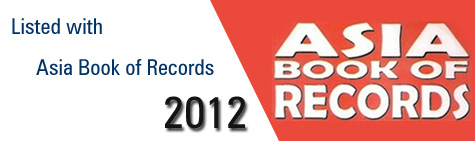

It was dual celebration for KRPD on 14th November 2019, one, it was F2S 14th anniversary and secondly, we crossed the benchmark of 4,00,000 donors. It feels great for an organisation which started with 5 people to have reached 4,00,000 people today.
ACHEIVEMENTS
- Crossed the benchmark of 3,00,000 donors

- Heroes of Hyderabad Award to KRPD founder Mr. Shareef

- Limca Book of Records 2017 as India's Largest Voluntary Blood Donors website
- Digital Trailblazer Award 2016

- Limca Book of Records 2016 as India's Largest Voluntary Blood Donors website
- Real Hero Award to KRPD founder Mr. Shareef

- "Award of Excellence - 2015" from Ministry of Health and Family Welfare, Government of India

- Limca Book of Records 2015 as India's Largest Voluntary Blood Donors website

- Limca Book of Records 2014 as India's Largest Voluntary Blood Donors website

- Winner of World Summit Youth Award - 2013

- Limca Book of Records 2013 as India's Largest Voluntary Blood Donors website
"> - mBillionth South Asia Award - 2013
- Asia Book of Records as World's Largest Voluntary Blood Donors website

KRPD founder Mr. Shareef has honoured with "Heroes of Hyderabad Award" by Radio City 91.1 F.M. We dedicate this recognisation to all the 2,00,000 voluntary donors who register with KRPD and saving lives.
we are happy to share with you yet another proud moment of KRPD as we listed with Limca Book of Records 2017 as India's Largest Voluntary Blood Donors website. We dedicate this recognisation to all the 2,00,000 voluntary donors who register with KRPD and saving lives.
On the occasion of The Digital India conclave 2016, KRPD honoured with "Digital Trailblazer Award" from India Today and, Government of Andhra Pradesh for promoting voluntary blood donation using digital technology and social media.
We are happy to share with you yet another proud moment of KRPD as we listed with Limca Book of Records 2016 as India's Largest Voluntary Blood Donors website. We dedicate this recognisation to all the 2,00,000 voluntary donors who register with KRPD and saving lives.
On the occasion of Independence Day, KRPD founder Mr. Shareef has honoured with "Real Hero Award" by Big 92.7 F.M. We dedicate this recognisation to all the 2,00,000 voluntary donors who register with KRPD and saving lives.
On the occasion of World Blood Donors Day, i.e. 14 June 2015, KRPD honoured with "Award of Excellence" from the Ministry of Health and Family Welfare, Government of India for promoting voluntary blood donation using digital technology and social media.
We are happy to share with you yet another proud moment of KRPD as we listed with Limca Book of Records 2015 as India's Largest Voluntary Blood Donors website. We dedicate this recognisation to all the 2,00,000 voluntary donors who register with KRPD and saving lives.
We are happy to share with you yet another proud moment of KRPD as we listed with Limca Book of Records 2014 as India's Largest Voluntary Blood Donors website. We dedicate this recognisation to all the 2,00,000 voluntary donors who register with KRPD and saving lives.
We are happy to share with you yet another proud
moment of KRPD as we won prestigious World Summit Youth Award (WSYA) 2013 in the category of Fight
Hunger, Poverty & Disease.
KRPD mobile applicaitons has selected as one of the best projects from 2500 projects from across the world.
The award is a recognition for young people who use Internet and Mobiles to get Action on United Nations Millennium Development goals.
We are happy to share with you yet another proud
moment of KRPD as we listed with Limca Book of Records 2013 as India's Largest Voluntary Blood Donors website. We dedicate this recognisation to all the 1,00,000 voluntary donors who register with KRPD and saving lives.
In July 2013, KRPD was adjudged as
the winner of "Best digital content used
in the development of Society".
We are happy to share with you yet another proud
moment of KRPD as we listed with Asia Book of Records as World's Largest Voluntary Blood Donors website. We dedicate this recognisation to all the 1,00,000 voluntary donors who register with KRPD and saving lives.